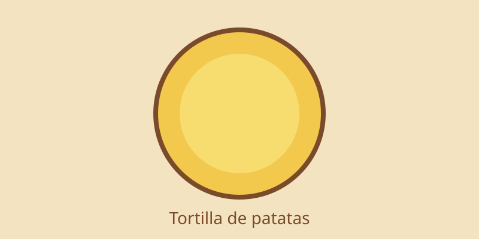

Receta destacada: Tortilla de patatas

La receta más clásica de la cocina española. Con patatas, huevo y cebolla, es un plato sencillo que nunca falla, perfecto para cualquier ocasión.

La receta más clásica de la cocina española. Con patatas, huevo y cebolla, es un plato sencillo que nunca falla, perfecto para cualquier ocasión.
Una sopa fría a base de tomate, pepino y pimiento, ideal para el verano.
El plato de arroz más internacional de España, con pollo, conejo y verduras.
Un postre cremoso con una capa de azúcar caramelizado en la superficie.